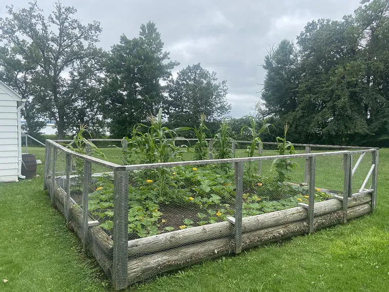

Photo: Rasbak at Dutch Wikipedia · CC BY-SA 3.0, via Wikimedia Commons.
How to build a Three Sisters mound
What the mound is for, how big to shape it, and the staggered order to plant corn, beans, and squash - with the exact block the corn needs to pollinate.
A sunny patch, worked soil, and room for a BLOCK of corn - not a single row
Seed for a flint or dent corn, a POLE (not bush) bean, and a running winter squash or pumpkin
Soil warm enough for corn - around 13°C55°F - so this is a late-spring, after-frost planting
The Three Sisters is corn, beans, and squash grown together on a raised mound. The mound and the planting order are the parts people skip, and they are the parts that make it work. Here is how to shape one and plant it, and where the honest limits are.
What the mound is for
A mound is a low, raised hill of soil. Raising the planting area a hand's width above the ground warms it faster in spring and drains it better - both of which the heat-loving corn and squash want in cool, wet soils early in the season. In a dry climate the advice flips: a raised mound sheds the water you need it to hold, so growers there flatten the top and press a shallow saucer into it to pool irrigation. (Extension sources describe the warming and draining; treat it as a sound reason to mound, not a precise, measured yield effect.)
How big to shape it
Two common sizes, both from extension guides - pick by how much room you have:
A small hill: about 30 cma foot high and 45–90 cm18 inches to 3 feet across, holding 3-4 corn plants. Space hills 0.9–1.2 m3–4 feet apart, in every direction.
A larger mound: a few feet wide, holding 7-10 corn plants.
Whichever you build, the corn's spacing inside it and the gaps between mounds are set so the whole patch reads as a block - which the next section explains is not optional.
The layout the planner produces
This is a Three Sisters bed laid out by the planner - the corn in its block, the beans at the corn's feet, and the squash filling the gaps between the mounds, exactly as the placement rules compute it:
36 × corn
27 × common bean
4 × summer squash
The real placement, on an example 10 ft bed - the same layout the planner draws.
The corn must be a block, not a row
This is the single mistake that ruins a first Three Sisters bed, so it leads here. Corn is wind-pollinated: pollen falls from the tassel at the top and has to land on the silks below, and a single decorative row lets the wind carry most of it away - you get ears with gaps where kernels never formed. The fix is to plant corn in a block of several short rows so the pollen has neighbours to land on:
Well established
Corn requires a block of at least 4 rows (roughly 12 plants) for adequate kernel set.
fatal if ignored → block
Mechanism: Maize is wind-pollinated and protandrous. Tassels shed pollen that must land on silks of neighbouring plants. Below roughly 12 plants in a block of at least 4 rows, insufficient pollen reaches enough silks; each unfertilized silk is one missing kernel.
Evidence: confirmed against 4 sources in the research-based literature.
the 4 sources
UMN Extension, 'Growing sweet corn in home gardens', extension.umn.edu/vegetables/growing-sweet-corn (read 2026-07-11): 'Always plant corn in blocks of at least four rows. Corn planted in a single row will have much of its pollen blown out of the row, and will produce ears that have blank areas where kernels did not form.'
NC State Extension, 'Organic Sweet Corn Production' (Horticulture Information Leaflets), content.ces.ncsu.edu/organic-sweet-corn-production (read 2026-07-11): 'Corn is wind-pollinated and should be planted in blocks of at least 4 rows for good pollination to occur.'
UMD Extension, 'Growing Sweet Corn in a Home Garden', extension.umd.edu/resource/growing-sweet-corn-home-garden (read 2026-07-11): 'Plant in blocks of at least three to four short rows, rather than one or two long rows, to ensure good pollination; minimum of three rows side by side (preferably four rows).'
Clemson HGIC 1308, 'Sweet Corn' (updated 2023-01-23), hgic.clemson.edu/factsheet/sweet-corn (read 2026-07-11): 'This crop is wind-pollinated; therefore, plant in blocks of several rows rather than 1 or 2 long rows to ensure full ears.'
remedy
Plant in a block of at least 4 rows, or omit corn and substitute a trellis.
Cluster your mounds together for the same reason - a tight block of hills pollinates; a line of them strung out does not.
Plant in order, not all at once

An established bed at the Mille Lacs Indian Museum, Minnesota - the corn up, the squash sprawling at its feet. Photo: Myotus · CC BY-SA 4.0, via Wikimedia Commons.
The three don't go in on the same day. Each gets a head start before the next would crowd or shade it, and the corn in particular has to be strong enough to carry the beans before they climb:
Well established
A vine assigned to a living support must be sown after the support is established — corn ~6 in (~15 cm) tall, roughly 2-3 weeks — not at the same time.
costly if ignored → warn
Mechanism: Load. A bean vine on an immature, poorly-anchored stalk pulls it over; extension guides key the delay to the support's height (corn ~6 in) as a proxy for it being rooted enough to bear the climbing load.
Evidence: confirmed against 2 sources in the research-based literature.
USDA National Agricultural Library, 'The Three Sisters of Indigenous American Agriculture', nal.usda.gov/collections/stories/three-sisters (read 2026-07-11): 'Two or three weeks after the corn was planted, the women returned to plant bean seeds in the same hills.'
remedy
Sow the vine 2-3 weeks after the support, once it is about 15 cm tall.
Corn first, once the soil is warm (around 13°C55°F). Sow 5-7 seeds per hill, 2–3 cman inch or so deep; thin to the sturdiest 3-4.
Beans next, when the corn is about 15 cm6 inches tall and can serve as a trellis - sow a few pole-bean seeds in a ring around the corn.
Squash last, about a week after the beans - a few seeds at the mound's edge, thinned to one, to run out across the ground between the hills.
Use pole beans and a running squash, not bush types - the whole structure depends on one climbing and one sprawling.
The honest limit worth knowing
The story that the beans feed the corn this season is the one everyone repeats, and it is overstated - most of a legume's nitrogen reaches its neighbours only after its roots and leaves break down, largely the following year. The beans improve the ground; they are not fertilising this year's corn. The companion planting, honestly guide has the full picture, and the Three Sisters guild page shows every claim graded. Grow it for the real structure - a living trellis, a living mulch, a block that pollinates - not for a nitrogen transfer that mostly isn't happening yet.

{kind=link}